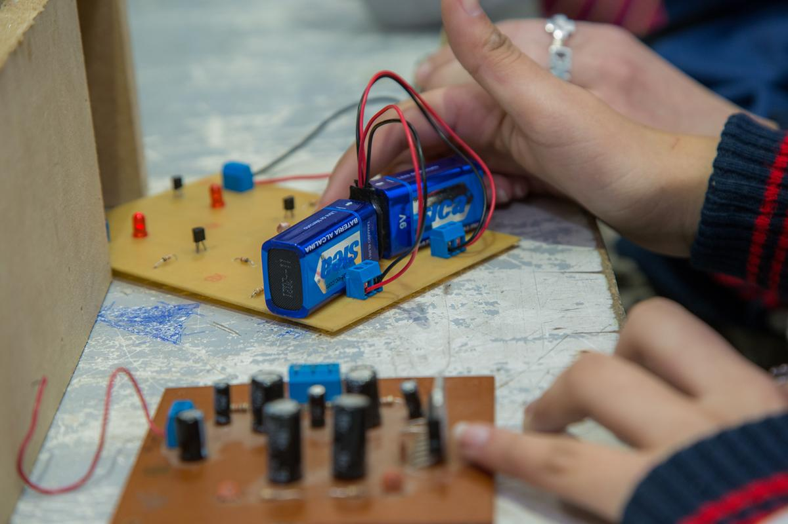
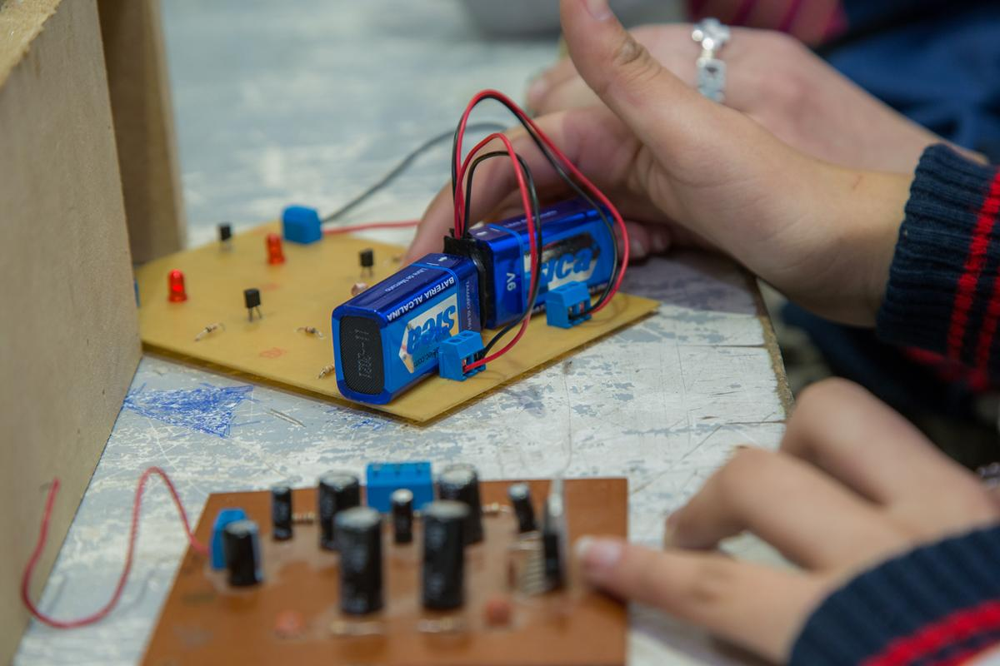

Especialidad
Electrónica
¡Descubrí Electrónica y abrí las puertas a tu futuro! Si te apasiona entender cómo funcionan los dispositivos, te gusta explorar los circuitos que hay detrás de cada aparato y sueñas con innovar en el mundo de la tecnología, la especialidad de Electrónica es para vos. Aquí aprenderás a diseñar, construir y programar sistemas electrónicos que dan vida a la tecnología que usamos todos los días, desde celulares hasta sistemas de automatización. No solo trabajarás con herramientas avanzadas como micro controladores y sistemas embebidos, sino que también serás clave en la resolución de problemas de la era digital. Con esta carrera, tendrás la oportunidad de crear, mantener y mejorar los sistemas electrónicos que transforman al mundo. Si te apasionan los desafíos técnicos y sueñas con ser el cerebro detrás de las innovaciones tecnológicas, ¡Electrónica es tu futuro!
¿Qué aprenderán?
Los estudiantes de la carrera de Técnico Electrónico desarrollan habilidades para diseñar, programar y ensamblar circuitos electrónicos. Aprenden a trabajar con micro controladores, realizar mantenimiento de sistemas electrónicos, interpretar esquemas y programar en diversos lenguajes. Además, aplican conocimientos científicos (matemática, física, informática) para resolver problemas complejos y gestionar proyectos de innovación. Los técnicos electrónicos están preparados tanto para trabajar en el sector industrial como para seguir con estudios superiores. ¡El título de Técnico Electrónico habilita como electricista matriculado categoría III del ERSEP!
 



¿Cómo son sus instalaciones?
En la especialidad de Electrónica, tendrás acceso a laboratorios modernos equipados con tecnología de punta. Contamos con osciloscopios, fuentes de alimentación, PLC, tableros, micro controladores, sensores y herramientas avanzadas medición. Además, trabajarás con placas de desarrollo de prototipos, kits de robótica, impresoras 3D y herramientas de diseño CAD y simulación de circuitos.¡Podrás ensamblar tus propios proyectos electrónicos como un profesional!
Proyectos
Si te encanta crear con tus manos, programar y ver cómo las ideas se convierten en productos reales, esta es tu oportunidad para aprender en un entorno que te prepara para la industria del futuro. En la especialidad de Electrónica, ¡trabajamos en proyectos innovadores que buscan mejorar la calidad de vida y la sustentabilidad! Con un enfoque en la eficiencia energética y la automatización, nos centramos en soluciones tecnológicas que impacten de manera positiva al mundo. Algunos de nuestros proyectos incluyen la creación de sistemas de iluminación inteligente, alimentación mediante energía solar, proyectos que buscan optimizar el consumo de energía en hogares inteligentes, etc. Si te interesa contribuir al cuidado del planeta mientras desarrollas tecnología avanzada, ¡Electrónica es el lugar ideal para vos!